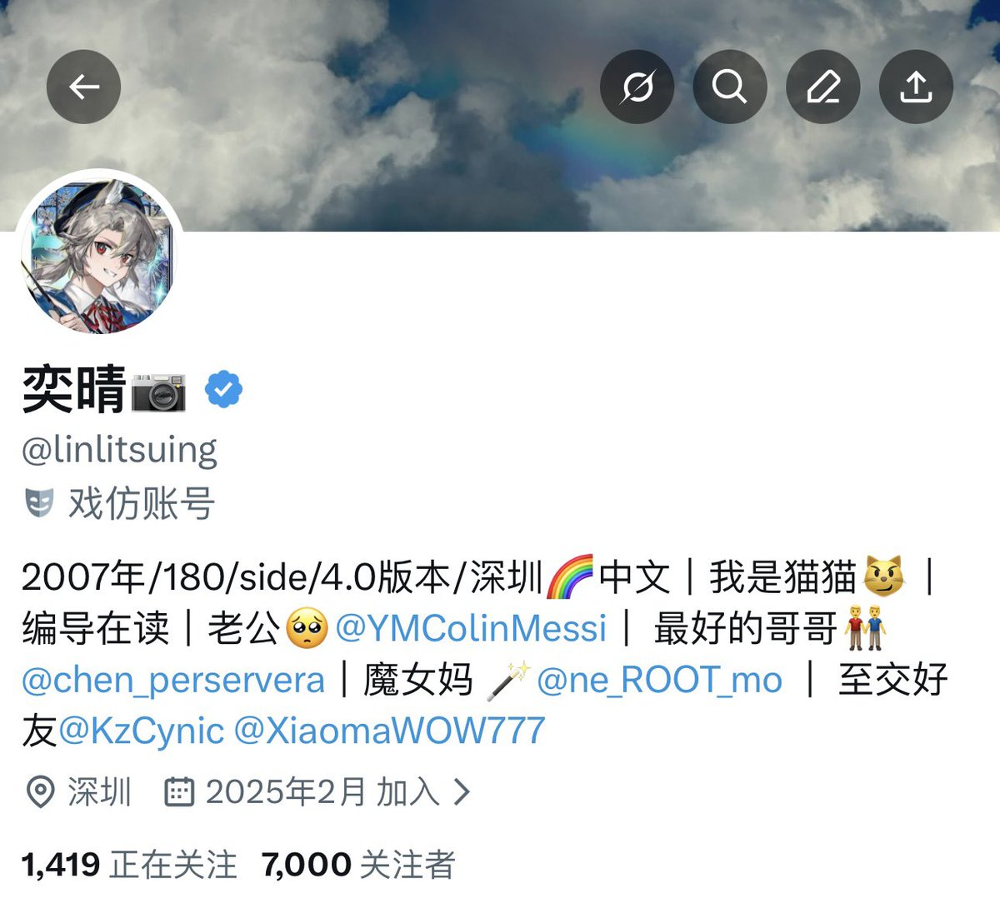

许白🔜嘉兴/杭州
@xubai_01
@linlitsuing 新年快乐

奕晴📷
@linlitsuing
［7000fo致谢及2026年贺词］
谢谢各位一直以来的关注与支持🥳
今年是我在推特跨的第二个年，这一年以来我既有开怀大笑，也有流尽眼泪和愤恨
我的初衷始终保持做一个优秀的综合分享者，尽心对待我的朋友们，热情对待生活，成为一个完整的人
㊗️各位推友2026年平安喜乐，生活和美，能收获自己的“小幸运”🍀 https://t.co/aR5eAEL7g1